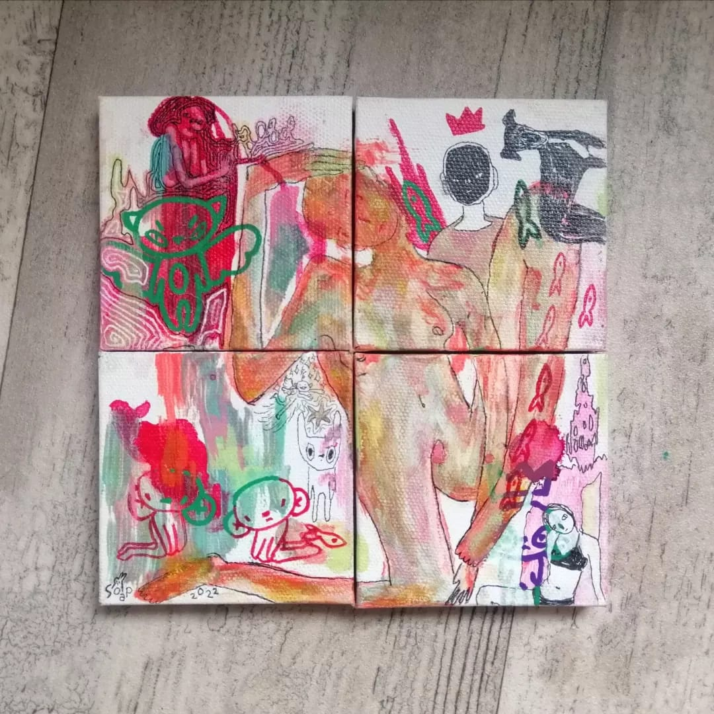
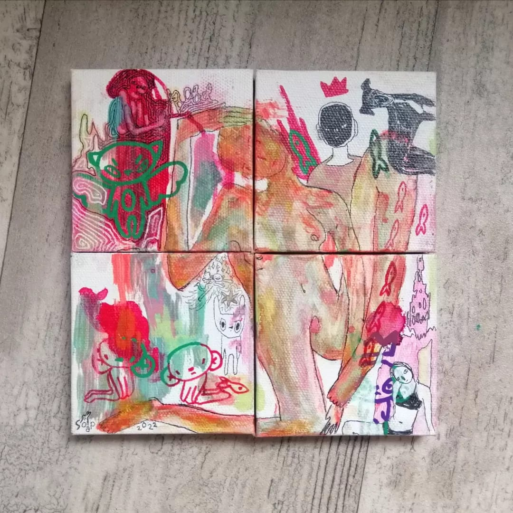

Projecten
CareBot
"We Care So You Don't Have To"
De CareBot helpt jou met je dagelijkse pillen innemen en daar water bij te drinken. Zo verspil je in de ochtend niet tijd aan je pillen bij elkaar zoeken! Er is zelfs de mogelijkheid voor pillen die je niet een keer per dag neemt.
Kastje
Dit kastje heb ik gemaakt omdat ik wou kunnen lassen (en ook omdat ik een kastje wou hebben)


Schilderijtjes
4 schilderijtjes
 

Digitaal
Hier zijn twee digitale tekeningen.